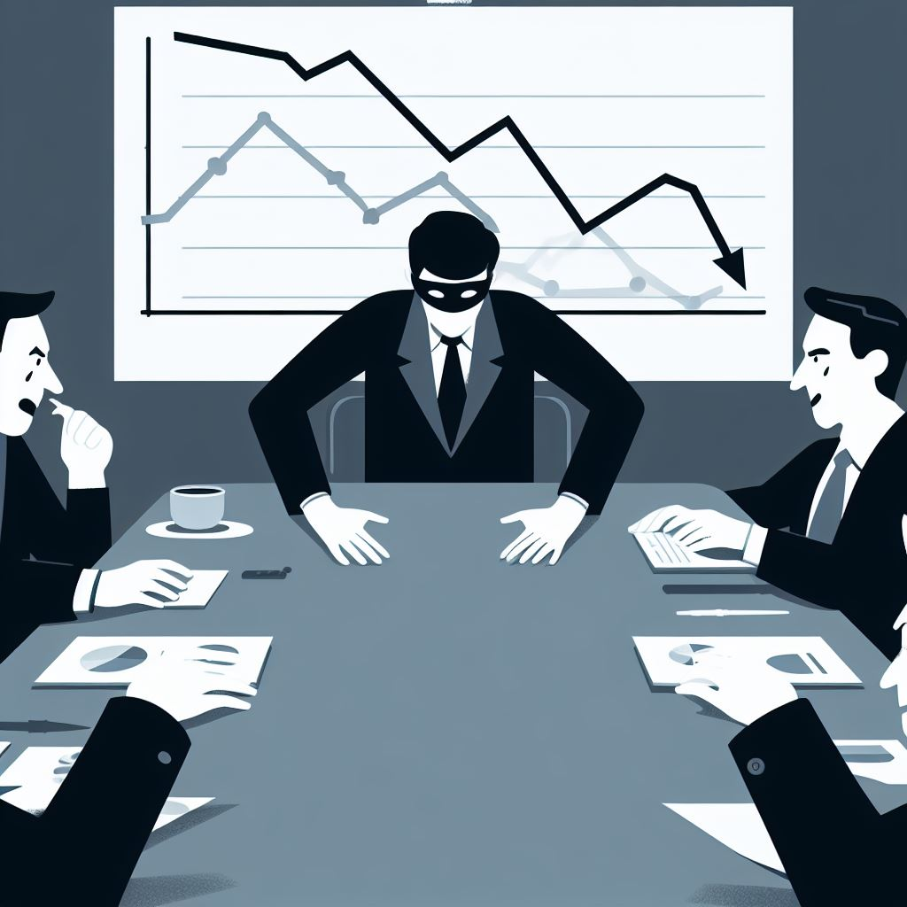

Objective
Accumulate the most money by the end of a predetermined number of rounds (suggested: 10 rounds). Players act as CEOs of rival corporations, building their empire while engaging in corporate espionage.
Components

- Pen and Paper: For tracking resources, departments, and actions.
- A Standard 52-Card Deck: Use only the face cards (A, K, Q, J) and two Jokers.
- 6-Sided Dice: For introducing elements of chance and uncertainty.
- Tokens: For representing Products, Employees, and Money.
Setup
- Each player starts with 3 employee tokens and a hand of 2 cards drawn from the modified deck.
- Players have four departments: Research, HR, Production, and Sales.
- Determine the first player via a coin toss or another fair method.
Turn Structure
Each turn consists of four phases:
-
Allocation Phase
- Players allocate their available employee tokens among the different departments.
- Note: One employee token cannot be split between multiple departments.
-
Action Phase
- Players may play any number of special action cards from their hand.
- Includes playing an "Espionage" card, which—if successful—disrupts a chosen department in the opponent's corporation for the current turn. (See Espionage section for details.)
-
Execution Phase
- Roll a die for the overall market demand for the current turn. Add additional dice for each "Market Research" card in play.
- For each department where they have employee tokens, players roll a 6-sided die per employee:
- Production: On a 5-6, produce a product token.
- Research: On a 5-6, draw a special action card.
- HR: On a 5-6, gain a new employee token.
- Sales: On a 5-6, make a sale, earning 2 money tokens, up to the overall market demand.
- An "Innovation Boost" card can upgrade a department, lowering the success roll threshold (from 5-6 to 4-6, 4-6 to 3-6, etc.).
-
Economic Upkeep Phase
- Players must pay 1 money token per employee token for upkeep costs.
- If a player cannot afford upkeep for all their employees, they must let one go.
Espionage Mechanic
- Players may bluff that they have an Espionage card, even if they don't.
- To play Espionage, place a card face-down and target a department.
- The targeted player can either call the bluff or accept the sabotage. If they accept, the sabotage is successful and the face-down card is discarded.
- If a bluff is called and revealed:
- If it's an Espionage card, the defender loses an employee token in the targeted department and the sabotage is successful.
- If it's not an Espionage card, the attacker rolls a die and loses that amount of money. If they can't pay, they lose an employee token.
Winning Condition
The game concludes after 10 rounds. The player with the most money tokens wins.